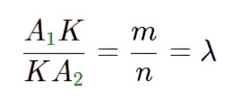

Даны точки A1(x1;y1) и A2(x2;y2). Требуется найти координаты точки K(x;y), делящей отрезок A1A2, в заданном отношении.
Для этого нужно воспользоваться сначала формулой для нахождения λ;.А затем найти координаты K по формуле
Формула вычисления расстояния от точки A(xa, ya, za) до точки B(xb, yb, zb) в пространстве:
